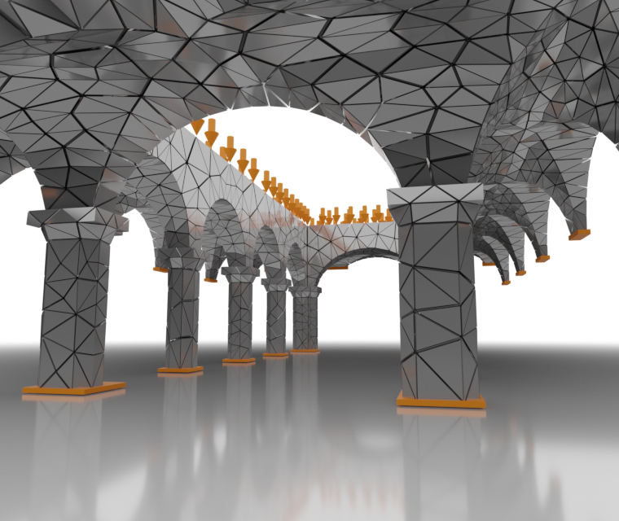
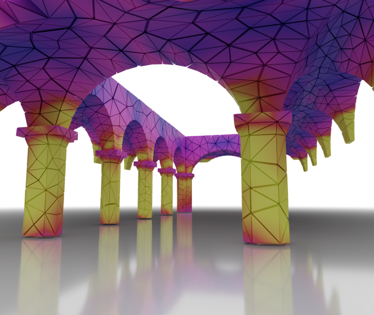
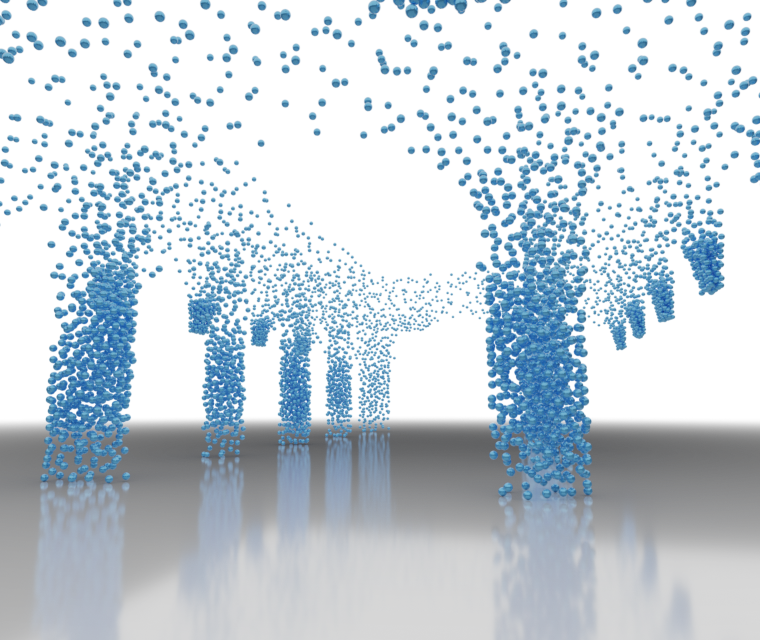
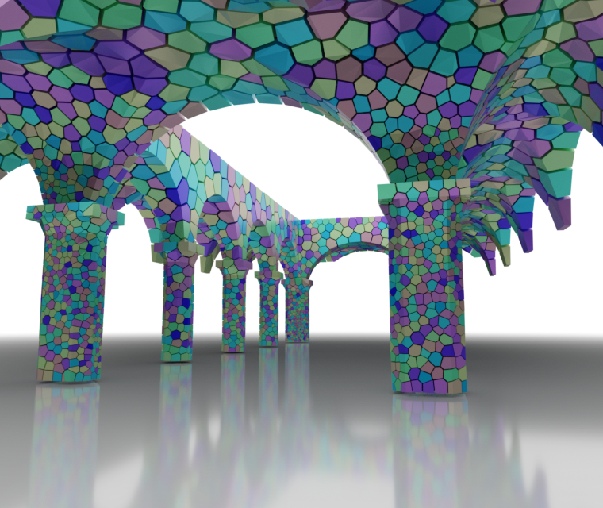
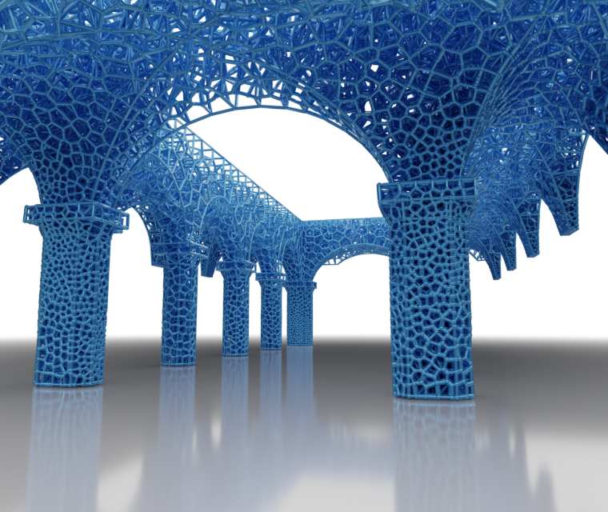
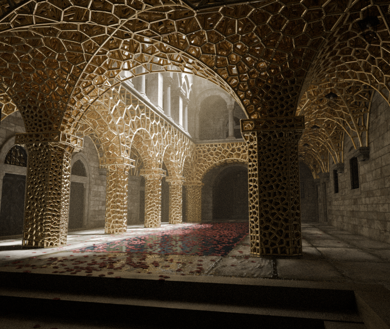

This page is created to showcase and exchange the use of SGLDBench.
Reporting bugs, leaving comments, and sharing cool application cases are warmly welcomed!
SGLDBench is a comprehensive benchmark suite for applying and evaluating material layout strategies to generate stiff, lightweight structural designs
in 3D domains, with a special focus on high-resolution designs. It has been awarded the Replicability Stamp under the Graphics Replicability Stamp Initiative (GRSI).
SGLDBench provides a seamlessly integrated simulation and analysis framework, including six reference strategies and a scalable multigrid
elasticity solver to efficiently execute these strategies and validate the stiffness of their results.
SGLDBench is primarily implemented using MATLAB, but also has external calls to C++ code through the MEX interface for performance reasons,
and to executables and Python codes for functionality reasons, which provides a handy stencil for future extensions.
For an overview of this tool, please have a look at the README
of the code repository and watch the guide videos.
Updates
2025-08-10: Good News! SGLDBench is awarded the Replicability Stamp under the
GRSI.
Evaluating stiffness of external structural designs depicted in voxels, node-edge graph, tet- or hex-mesh? ✔️
Evaluating stiffness of structural designs when loading direction is changed? ✔️
Simply visualizing a structural design depicted in voxels and written in .NIFTI format? ✔️
Data Format
SGLDBench takes triangular surface meshes (.obj, .ply, .stl) as input to construct the voxelized
domain for elasticity simulation.
SGLDBench introduces a tailored ASCII File (.TopVoxel) to exchange (I/O) the voxel FEA model, including
solid voxels/Elements, node-wise boundary conditions, per-voxel density values (optional), and passive
elements if necessary. Both element and node information are stored as the indices of the target
entities in the corresponding binary volume data (V) in Row-Column-Page order, refer to
indices=find(V) in MATLAB.
External lightweight structural designs depicted in a node-edge graph (.obj), tet-, or
hex-mesh (.vtk, .mesh) can be imported into SGLDBench for stiffness evaluation by voxelizing
graph/mesh edges
Strucctural designs made in SGLDBench are depicted in a volume data and exported in the ".NIFTI" format
for downstream operations.
Related Publication
Title: "SGLDBench: A Benchmark Suite for Stress-Guided Lightweight 3D Designs" Authors:Junpeng Wang, Dennis Bukenberger, Simon Niedermayr, Christoph Neuhauser, Jun Wu, Rüdiger Westermann Venue: IEEE Transactions on Visualization and Computer Graphics, 2025 [Read the Paper]
Application-specific Branches/Extensions
TBA
Benchmarking
Processing Time of Conducting Same Simulation Task on Different Hardware.
One can run "./SGLDBench/QuickAccess/PerformanceBenchmarking.m" for performance benchmarking, where topology optimization is conducted on
a cuboid design domain with resolution 500x250x250, corresponding to about 95 million DOFs, and stopped after 50 iterations.
The convergence threshold of MGCG is 1.0e-3. Welcome the interested users to share their testing results!
Context:
For this illustration, we extracted the ground floor geometry of the Sponza scene and applied mechanical boundary conditions to the load-bearing structure.
Stress-density samples, guided by FEM-derived stress fields, informed the Voronoi diagram generation.
The resulting edge-graph design reflects a stress-guided material layout with a 50% reduced material budget.
This final structure, then inserted into the scene again and rendered in Blender, won the CGF 2025 Cover Contest üèÜ.






Case 2: Infill Design for a Molar
Context: Given a geometric model of a molar described in a triangular surface mesh, one can generate different
types of infill patterns under the same material budget (e.g., 50%) and compare the stiffness measured by the compliance value (C).
Design domain
FEA model
C=1.26C0
C=1.59C0
C=1.92C0
C=1.86C0
C=2.49C0
C=3.25C0
Case 1: Topology Optimization Practices with SGLDBench
Contexts: With SGLDBench, beginners stepping into high-resolution topology optimization can quickly create topology-optimized
high-resolution designs, exploring the effects of different boundary conditions, simulation resolutions, filtering radius.
SGLDBench also integrates several simple shapes (cuboid, L-shape, cylinder) to facilitate this.
Practice 1.1 Same cuboid design domain but with different boundary conditions. Resolution: 300x150x150
Practice 1.2 Same optimization problem with different simulaton resolutions
100x50x50, C=12.22C0
200x100x100, C=9.64C0
400x200x200, C=9.20C0
800x400x400, C=7.91C0
Practice 1.3 Same optimization problem with a different filter radius (r). Resolution: 500x250x250